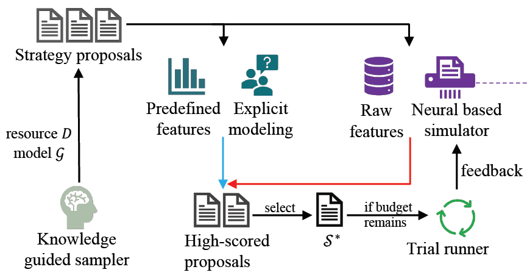

Email: sjtu.haozhang AT gmail.com

Bio
I will be moving to the RISE Lab at the University of California, Berkeley as a postdoctoral scholar, working with Prof. Ion Stoica.
My most recent project is building an end-to-end composable and automated stack for large-scale distributed DL. The two most relevant projects are: AutoDist for automatic ML parallelization, and AdaptDL for co-adaptive ML job scheduling.
My general research interest is in scalable machine learning, deep learning, and large-scale ML applications in computer vision and natural language processing. I co-design models, algorithms, and systems to scale out ML to larger data, problems and applications, to ease the prototyping of complex ML models and algorithms, and to automate the distribution of ML programs.
I completed my Ph.D. in the Robotics Institute, Carnegie Mellon University. My advisor was Prof. Eric Xing. My Ph.D. thesis is Machine Learning Parallelism Could Be Adaptive, Composable and Automated. Several of my Ph.D. works including Poseidon, Cavs, and GeePS, are parts of the Petuum project, and now being commercialized at the Pittsburgh-based startup Petuum Inc.
News:
- I defended my Ph.D. on September 2, 2020! Check out my Ph.D. dissertation and my defense video.
- I am recently working on AutoDist (formally Arion). We open-sourced AutoDist this July, check it out!
- I open-sourced the Cavs Code, check it out!
Publications
[ / / / / / ]
Preprint 2020, to appear
code


NeurIPS 2020, To appear
code


Software
I have built or contributed to many open source projects for large-scale machine learning.Teaching
- TA of 10-708 Probabilistic Graphical Models, Spring 2019, Carnegie Mellon University
- TA of 16-791 Applied Data Science, Spring 2019, Carnegie Mellon University
- TA of 10-701 Introduction to Machine Learning, Fall 2015, Carnegie Mellon University.
- TA of Artificial Intelligence, Spring 2012, Shanghai Jiao Tong University.